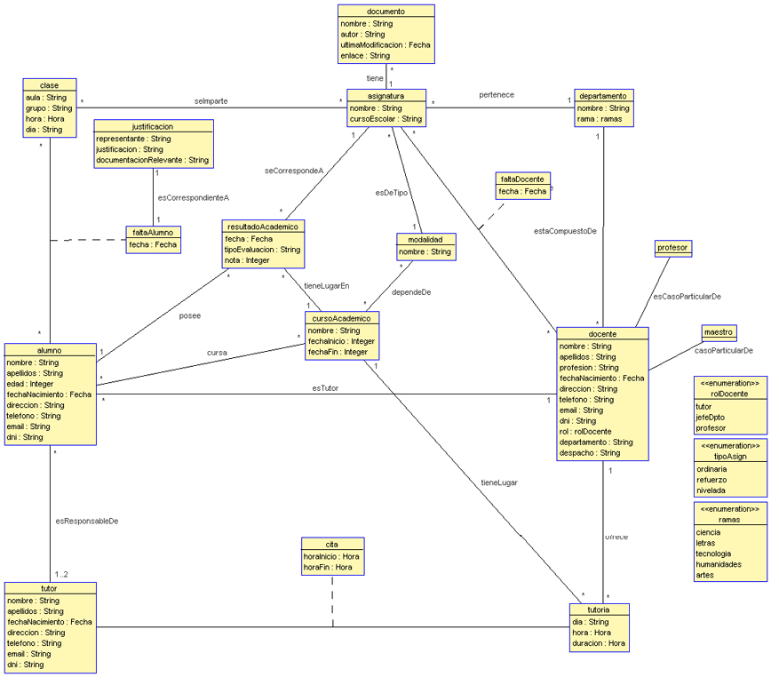
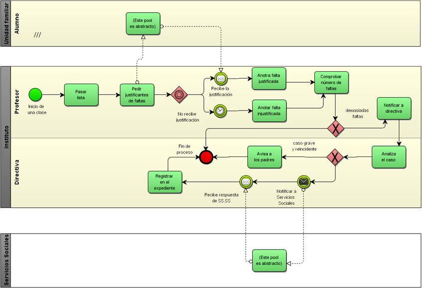

Gestión de centro educativo
Descripción
En este proyecto se intenta, sólo a nivel de requisitos, informatizar el modelo de negocio de un instituto, de tal modo que gestione los horarios, tutorías, etc. El sistema esta pensado para tener como usuarios al personal del instituto perteneciente al equipo directivo, la secretaría y al profesorado. También a los alumnos e incluso sus padres/tutores que también tendrán acceso al sistema para ciertas utilidades.
La realización del proyecto, para la asignatura de Ingeniería de Requisitos, se pretendía simular cómo es la elicitación, análisis y validación de requisitos en un proyecto real. Para ello, tuvimos que elegir un tema, en nuestro caso un centro educativo, y conseguir un cliente. El cliente en cuestión fue una profesora del IES Martínez Montañés, ya que fue su instituto el modelo que seguimos de cara a realizar la fase de requisitos.
Este proyecto fue realizado por Juan Manuel López Pazos, Arturo Jiménez López, Jesús David González Belda y por mí, Sergio Rodríguez Calvo.
Como resultado obtuvimos entre otros productos software un diagrama UML (que se muestra a continuación) y diagramas BPMN, para detallar la lógica de negocio del instituto (se muestra un ejemplo a continuación).
 